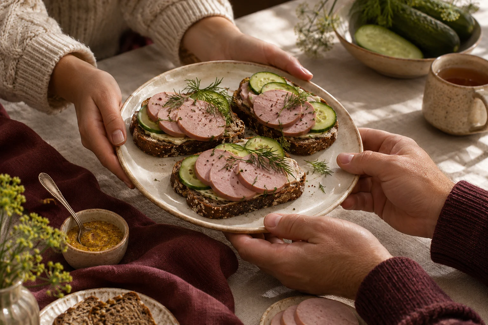

Nasza selekcja · 01
Smak ma
wiele twarzy.
Od dobrze znanych klasyków po smaki, które warto odkryć na nowo. Wybierz swój.
Oryginalne projekty etykiet. Fotografie produktów w przygotowaniu.

SMACZNE RZECZY MAJĄ SWOJĄ OPOWIEŚĆBlisko tego, co znane
Z Ukrainy.
Z sercem.
Są smaki, które od razu przywołują dobre chwile. Darnytskie Wyroby to zaproszenie do ukraińskiej tradycji smaków — teraz bliżej Ciebie.
Bez wielkich słów. Po prostu rzeczy, które dobrze smakują, najlepiej dzielone przy wspólnym stole.
Poznaj nasze produktyTo, co łączy
03 / NASZA IDEA
Smak, jakość i tradycja
Smak
Znajomy. Szczery.
Do podania dalej.
Jakość
Wybieramy to, co
naprawdę dobre.
Tradycja
Smaki, które
niosą wspomnienia.
W
SMAK · JAKOŚĆ · TRADYCJA
Przy wspólnym stole · 04
NA CO DZIEŃ
I OD ŚWIĘTA
Smaki, które
kochasz.
Prosto, po swojemu, razem.
Bo najlepsze chwile
zaczynają się od „siadaj”.
Smak, który
łączy.
KADRY ILUSTRACYJNE
Blisko Ciebie · 05
Znajdź nas
blisko siebie.
Sprawdź dostępność naszych produktów w swojej okolicy. Lista lokalizacji pojawi się po dodaniu potwierdzonych punktów.
↑01 / 00
Oczekiwanie na
potwierdzone lokalizacje
Lokalizacje pojawią się po wprowadzeniu i potwierdzeniu danych. Mapa ma charakter demonstracyjny.
Porozmawiajmy · 06
DARNYTSKIE WYROBY / PLSmak zaczyna
się od rozmowy.
Chcesz wiedzieć więcej o marce lub współpracy? Odezwij się.
Adres w przygotowaniu
Linki w przygotowaniu
W przygotowaniu